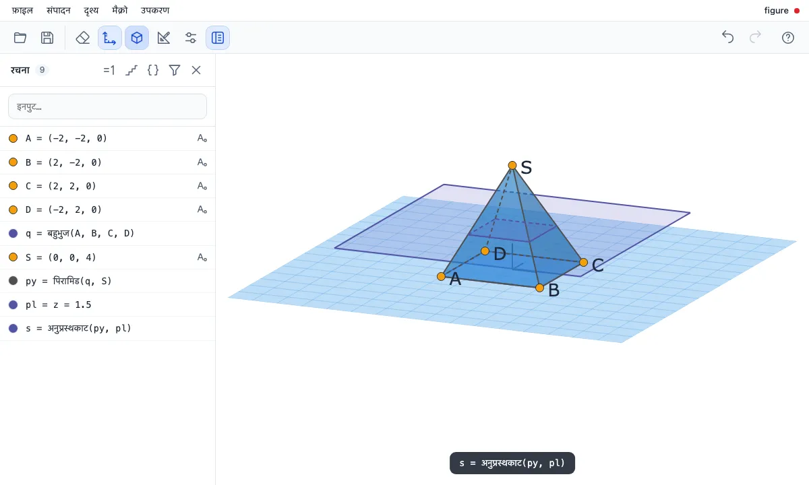

3D

3D में जाना
- नई आकृति समतल होती है। 3D दृश्य कैमरे को झुकाता है: आकृति का तल फ़र्श z = 0 बन जाता है, और निर्देशांक प्रणाली एक त्रिफलकी। दूसरी बार दबाने पर पिछली निर्देशांक प्रणाली के साथ समतल पर वापसी होती है।
-
जब तक कोई ऑब्जेक्ट तल z = 0 से बाहर है, समतल पर
वापसी अस्वीकार होती है; संकेत उसका नाम बताता है। उल्टे, समतल
आकृति कोई त्रिविम ऑब्जेक्ट स्वीकार नहीं करती (
A = (1, 2, 3), गोला…)। - हर बदलाव पूर्ववत करने का एक चरण है।
- DGPad की 3D आकृतियों में, जिनके मुक्त बिन्दु स्क्रीन के तल में होते हैं, यह बटन नहीं होता।
दृश्य
- घुमाना: दायाँ बटन, या खाली जगह पर एक उँगली। खिसकाना: खाली जगह पर बायाँ बटन। ज़ूम: व्हील।
- आकृति बड़ी करने के लिए दो उँगलियाँ फैलाएँ और छोटी करने के लिए पास लाएँ। दृश्य खिसकाने के लिए दोनों उँगलियाँ साथ खिसकाएँ।
- P: परिप्रेक्ष्य या समांतर प्रक्षेप; S: फ़र्श। यही सेटिंग आकृति टैब में भी है।
- छिपे भाग (किनारे, वृत्त, फ़र्श के नीचे या किसी फलक के पीछे की रेखाएँ) डैश वाले होते हैं।
रचना
-
खाली जगह पर क्लिक फ़र्श पर एक बिन्दु बनाता है (पैलेट खुला
होने पर, बिन्दु टूल से); कीबोर्ड से
S = (0, 0, 4)। - पैलेट में समतल और ठोस परिवार और दो वृत्त जुड़ जाते हैं; किसी बिन्दु का वलय गोला सुझाता है।
- सममितियाँ, घूर्णन, आवर्धन और स्थानांतरण समतल, गोले या बहुफलक का भी रूपांतरण करते हैं (किसी वस्तु का रूपांतरण)।
-
समतल की अपेक्षा करने वाला हर टूल
फ़र्श स्वीकार करता है: एक छिपा समतल
z = 0बनता है और फिर दोबारा उपयोग होता है। -
सूत्र तीनों निर्देशांक पढ़ते हैं:
d(A, B)त्रिविम दूरी है।
| ऑब्जेक्ट | कमांड |
|---|---|
| समतल |
समतल(A, B, C),
समतल(A, d),
समांतरसमतल(A, p),
लंबसमतल(A, d),
p = x + y + z = 3
|
| समतल पर लंब | लंबरेखा(A, p) |
| गोला |
गोला(O, A),
गोला(O, r)
|
| वृत्त |
अक्ष d वाला वृत्त(d, P);
वृत्त(O, r, d) रेखा d पर लंब या
समतल d के समानांतर
|
| ठोस |
बेलन(A, B, r),
शंकु(A, B, r),
घन(A, B, C),
चतुष्फलक(A, B, C),
अष्टफलक(A, B, C),
द्वादशफलक(A, B, C),
विंशफलक(A, B, C),
प्रिज़्म(p, P),
पिरामिड(p, S)
|
| अनुप्रस्थ काट |
अनुप्रस्थकाट(s, p): वृत्त, शांकव या
बहुभुज
|
| जाल |
जाल(c, f), f 0 (मुड़ा हुआ) से 1
(समतल) तक
|
| प्रतिच्छेद |
प्रतिच्छेद(d, p) बिन्दु,
प्रतिच्छेद(p, q) रेखा,
प्रतिच्छेद(s, t) दो गोलों का वृत्त,
प्रतिच्छेद(d, s, n) एक रेखा और एक
गोले, बेलन या शंकु का बिन्दु (n = 1 या 2)
|
| शीर्ष | शीर्ष(c, k), k 1 से आरंभ |
| फलक | फलक(k, n), n 1 से आरंभ |
ठोस
- फलक: समतल या बहुभुज की अपेक्षा करने वाला या बिंदु रखने वाला उपकरण सूचक के नीचे दिखने वाला फलक लेता है (कमांड)। प्रतिच्छेद उपकरण एक रेखा और एक समतल या बहुभुज भी लेता है।
- ठोस एक ही ऑब्जेक्ट है: वह फलक और किनारे (पीछे वाले डैश वाले) खींचता है और अपने पीछे की चीज़ें छिपाता है। उसे उसकी रूपरेखा के भीतर से चुना जाता है।
-
दो क्लिक में घन: एक ही समतल या बहुभुज के दो
बिन्दु
घन(A, B, p, ±1)देते हैं, कैमरे की ओर वाली तरफ़; एक ही ऊँचाई के दो बिन्दुघन(A, B, 1)देते हैं, ऊपर (−1: नीचे)। अन्यथा टूल तीसरे बिन्दु की प्रतीक्षा करता है। यदि [AB] समतल के समानांतर न रहे तो घन अपरिभाषित हो जाता है। चतुष्फलक, अष्टफलक, द्वादशफलक और विंशफलक भी इसी तरह बनते हैं। - अनुप्रस्थकाट टूल ठोस और समतल को किसी भी क्रम में लेता है।
- प्रतिच्छेद टूल एक रेखा और एक गोला, बेलन या शंकु किसी भी क्रम में लेता है: वह वे दोनों बिन्दु बनाता है जहाँ रेखा सतह को भेदती है। उनमें से किसी एक के पास क्लिक करने पर केवल वही बनता है।
-
जालके दूसरे आर्गुमेंट के रूप में स्लाइडर खुलने को एनिमेट करता है:f = स्लाइडर(0, 1, 0),n = जाल(c, f)। -
पृष्ठ:
g(x, y) = …पृष्ठ z = g(x, y) देता है (इनपुट), जिसेप्रतिच्छेद(d, g, n)किसी रेखा से काटता है।